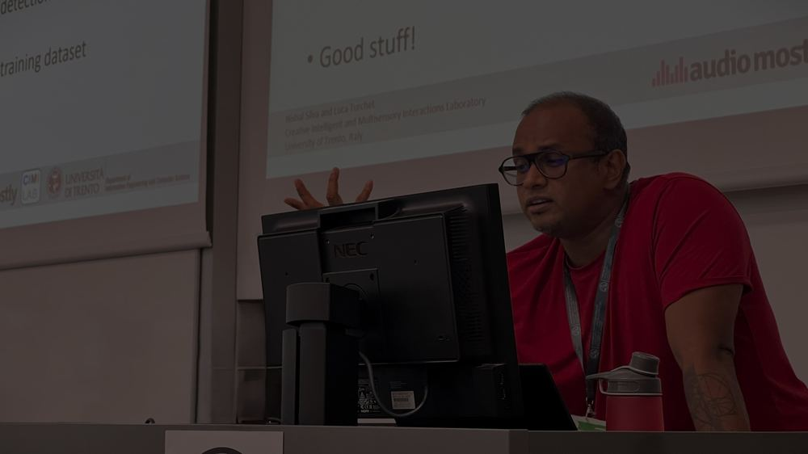

Calling I · PhD
Scientist
PhD in Information Engineering and Computer Science from the University of Trento. I work on Music Information Retrieval and Smart Musical Instruments, currently within the EU project Musical Metaverse.
Research →